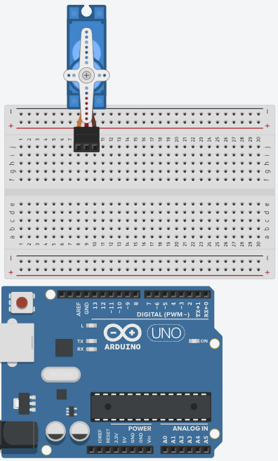

Adiciona o Arduino UNO

Adiciona a Protoboard
Adiciona um servomotor de 13kg
Adiciona botão de liga / desliga
Adiciona as ligações
Adiciona no Projeto 3D
Aproximadamente 10 milhões de pessoas sobrevivem a um derrame a cada ano. Na grande parte das vezes os resultados são permanentes, como: a perda de funções das mãos.

Síndrome do túnel do carpo é uma doença onde os dedos podem doer, formigar e ficar dormentes. Com o tempo, os músculos da mão na parte dorsal podem enfraquecer e retrair-se pela falta de uso (atrofia).
As distrofias musculares são desordens caracterizadas por fraqueza e atrofia muscular de origem genética que ocorre pela ausência ou formação inadequada de proteínas essenciais para o funcionamento natural do corpo.

Em primeiro lugar tivemos a ideia do que fazer (uma luva robótica, que iria ajudar no tratamento da atrofia muscular) e logo em seguida buscamos referências para conseguir torna-lá realidade e nessa pesquisa conseguimos encontrar esse projeto com a mesma ideia que a nossa, o FES, porém o FES utiliza Eletrochoques e nós utilizamos a simples força de fios
Concluído isso, passamos a pensar como seria o projeto no Tinkercad e logo conseguimos encontrar um modelo desejado e efetuamos o seu design. Então o projeto já estava como deveria estar no final, porém ainda faltavam alguns ajustes para torna-lo, finalmente, funcional. No Tinkercad colocamos um Arduino UNO e uma Protoboard, depois colocamos 5 servomotores, um para cada dedo da mão, após isso colocamos um botão de liga e desliga e, por último, um aparelho de choque, que irá ajudar no tratamento

Já na parte do código do projeto, concluímos rapidamente todo o código, já que a parte mais complexa foi ter a ideia e concluir que um servomotor puxaria cada dedo da mão. No código temos duas principais funções, a push e a pull, essas funções são responsáveis por puxar o dedo do usuário e por soltar o mesmo. Também temos, dentro do código, um botão de liga e desliga, cuja função é ficar repetindo o pull e o push quando o usuário pressionar o botão e, por último, o aparelho de choque que funciona de acordo com a funcionalidade do botão
Juntando todas os processos descritos anteriormente, podemos chegar ao modelo ao lado. Totalmente funcional com os 5 servomotores, o botão de liga e desliga e o aparelho de choque, todos com suas devidas funções no projeto de uma maneira simples, onde fica tudo organizado e prático para que qualquer um consiga entender
Portanto, a partir de todas essas etapas e dificuldades, nós conseguimos criar todo o circuito do projeto e conseguimos também imaginar como ele seria realmente finalizado. Feito isso podemos dizer que o projeto está funcional, somente falta a estrutura do projeto em si, porém sua função está concluída.
Nossas luvas se conectam com os problemas dos usuários, aumentando a mobilidade de suas mãos de maneira natural e progressiva.
Perfeitamente desenvolvida para o uso diário, nossa luva é compacta, leve, fácil de usar, discreta e confortável, fazendo com que seja a melhor experiência para o usuário.
Facilitação neuromuscular, Substituição ortica, Controle de Espasticidade, Parapleggias, paraparesias (Hemiplegias, lesão medular, etc.), Esclerose múltipla, Hiportrofia por desuso, Paralisia cerebral
Nós lhe damos uma mãozinha para você conseguir aproveitar quem você ama e quem você se importa por mais tempo.
A luva ARHAL tem como base a produção da contração através de motores, que despolariza o nervo motor, produzindo uma resposta sincrônica em todas as unidades motoras do músculo.